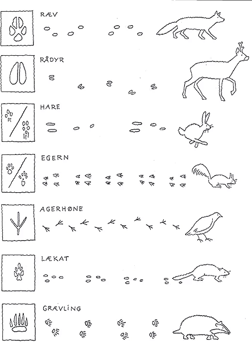
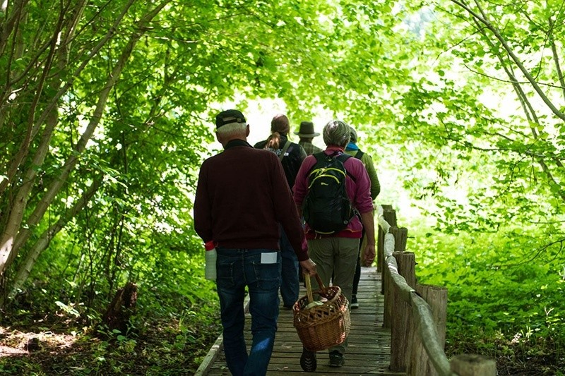
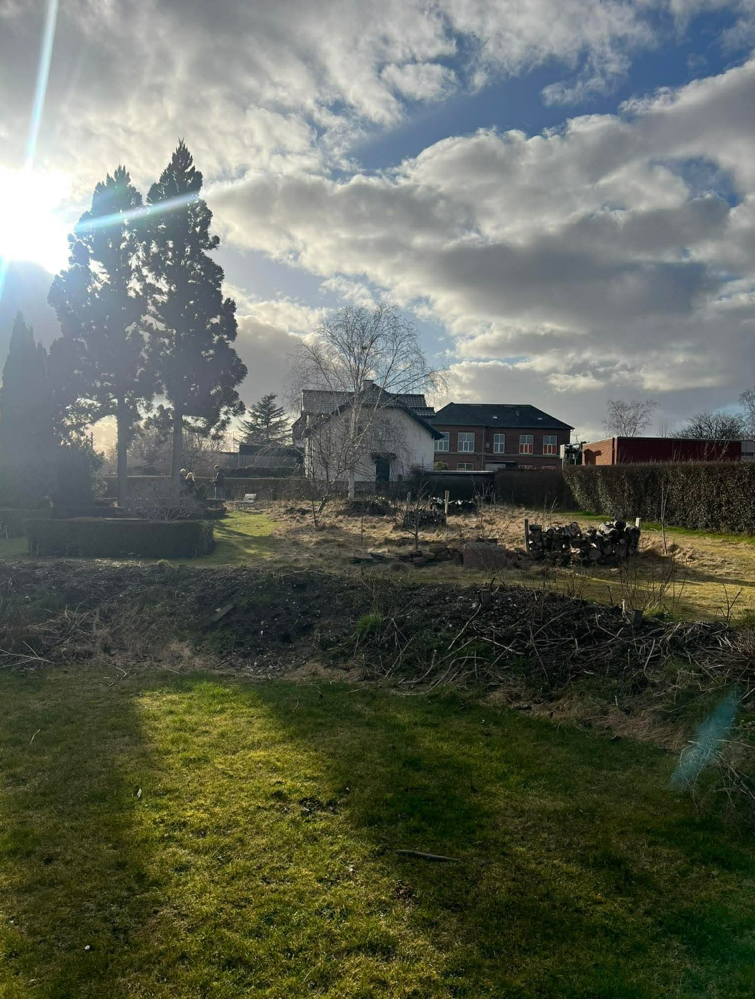
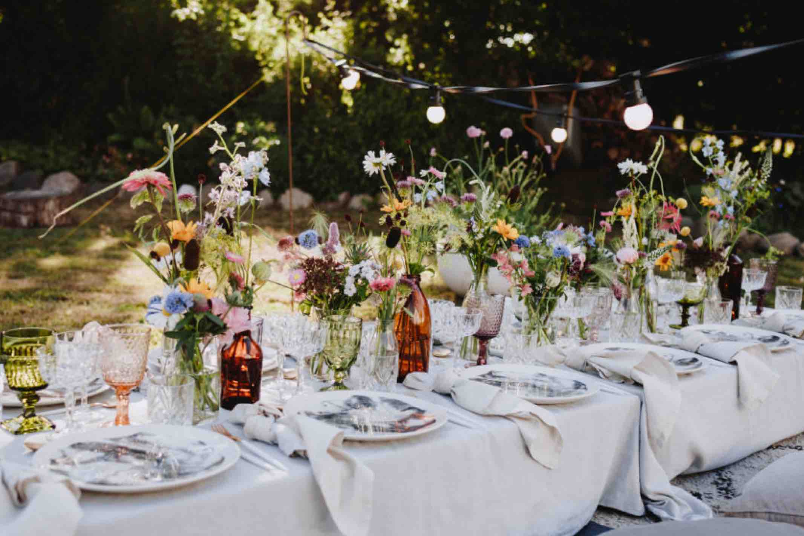

🧠 Oplev naturen – quiz på Nord Kirkegården
🚶 Gå en tur rundt og prøv at finde tingene i naturen
👀 Kig godt efter – nogle ting gemmer sig!
🌸 Prøv at finde nogle blomster på din vej
Hvem kan du se bevæge sig omkring dem?

🌿 Gå hen til nogle buske eller krat
Prøv at se om du kan spotte noget der gemmer sig

🌳 Stop op og kig op i træerne
Hvad kan du høre eller se?

🐾 Kig ned på jorden mens du går
Kan du finde tegn på at dyr har været her?

🐝 Kig tæt på græs og blomster
Hvad kan du se bevæge sig?

🍂 Kig på jorden under træerne
Hvad ligger der ofte der?
👂 Stop op og lyt et øjeblik
Hvad er det mest almindelige du kan høre i naturen?

🌿 Hvor mange ting fandt du på din tur?
👉 1-2 = God start
👉 3-5 = Du er godt på vej
👉 6+ = Natur-ekspert 🌿
🌿 Oplevelser
Oplev naturen sammen med andre gennem aktiviteter og fællesskab.
🚶 Naturvandringer
🐦 Fuglekigger
🌿 Oplev naturen tæt på
🚶 Naturvandring
En rolig tur gennem naturen med fokus på oplevelse og læring.

🐦 Fuglekigger
Oplev fuglelivet og lær at lytte og kigge i naturen.

💍 Bryllup & konfirmation
Nord Kirkegården danner smukke rammer for livets store øjeblikke.
💍 Bryllupper i naturen
🎉 Konfirmationer i grønne omgivelser


